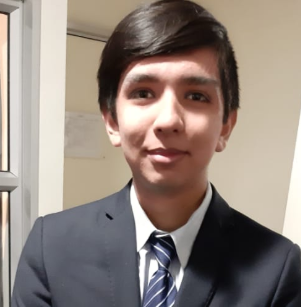

Presentación
¡Hola! mi nombre es bastián Marcelo Paredes Caroca
¡Hola! en este post me presentaré, mi nombre es Bastián Paredes, actualmente soy alumno de ingeniería en informática en santo tomas. Estoy cursando último semestre, en el cual me encuentro diseñando (en el cual solo me dedicaré a diseño) mi aplicación la cual apoyará el proceso de búsqueda de empleo en los jóvenes principalmente tengo conocimientos de programación orientada a objetos siendo java el lenguaje que más domino, seguido por programación funcional con Python, el cual es el segundo lenguaje que más domino, mi ruta de aprendizaje para poder dominar la programación web es poder aprender HTML y css de manera nativa y poder aplicar react y react native para programación front-end móvil, luego poder aplicar programación con nodejs para back-en ahora dejaré resto de información sobre mi para poder mostrar mis conocimientos y mis redes para poder contactarme. ¡un saludo y que tengas un muy buen día!